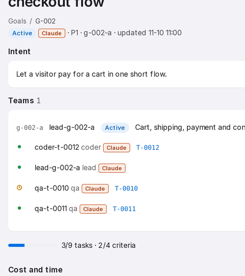

The coder opens a pull request and stops. A reviewer reads the diff. QA runs the tests. The judge merges only when both pass. A failure goes back with findings.
The agent that writes the change does not merge it.

The coder opens a pull request and stops. A reviewer reads the diff. QA runs the tests. The judge merges only when both pass. A failure goes back with findings.
